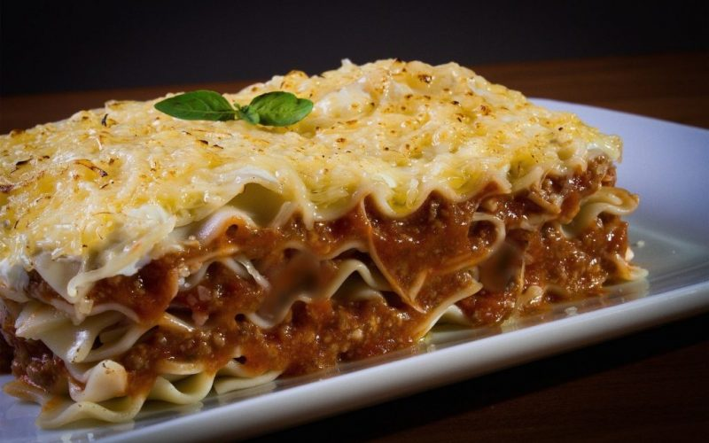

This no-bake skillet lasagna is made right on your stovetop and is a fast and easy alternative to store-bought hamburger mixes! Click here to go to the recipe!
This is an authentic Indian Naan recipe. I have made this many times. It goes well with Indian curry which has a lot of gravy, such as the Butter Chicken. Click here to go to the recipe!